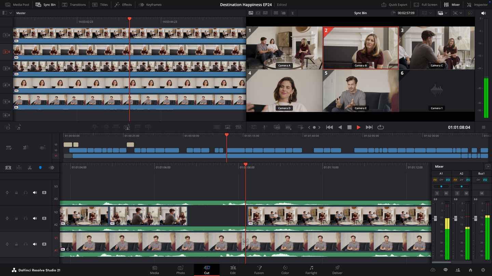
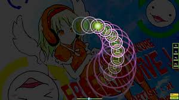
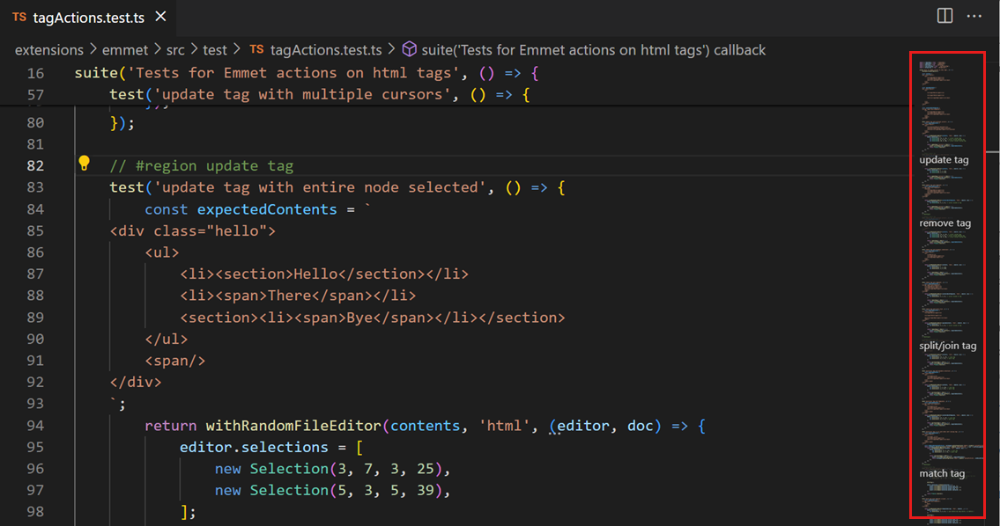
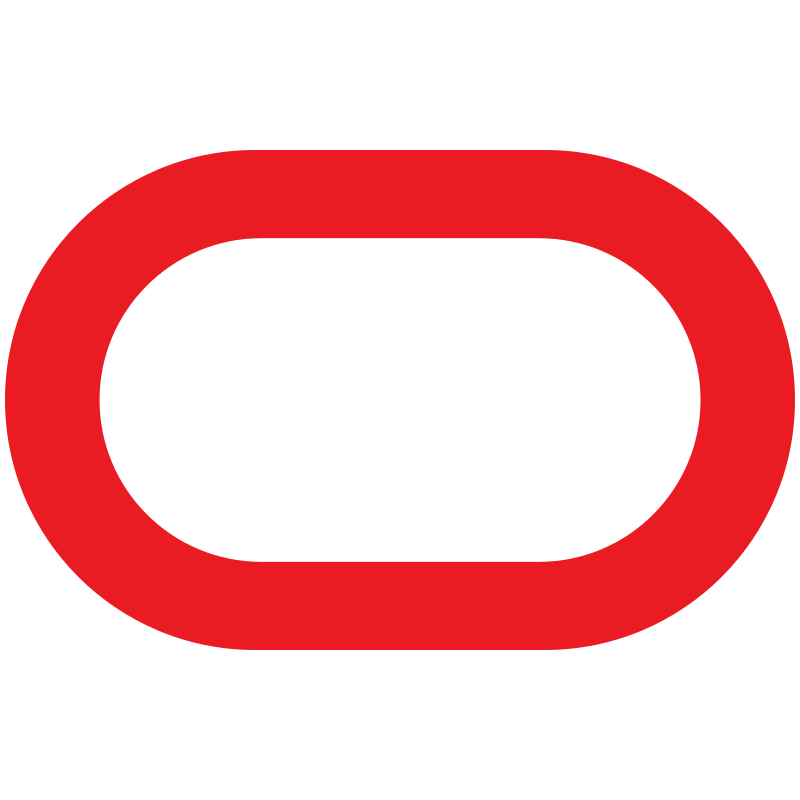
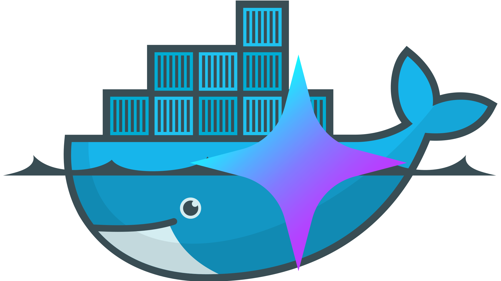
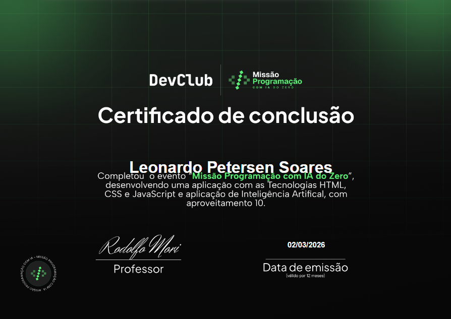
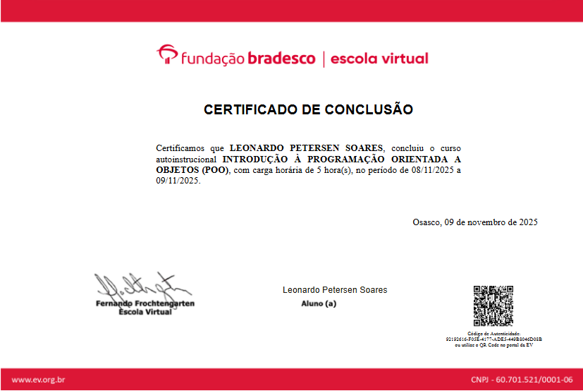
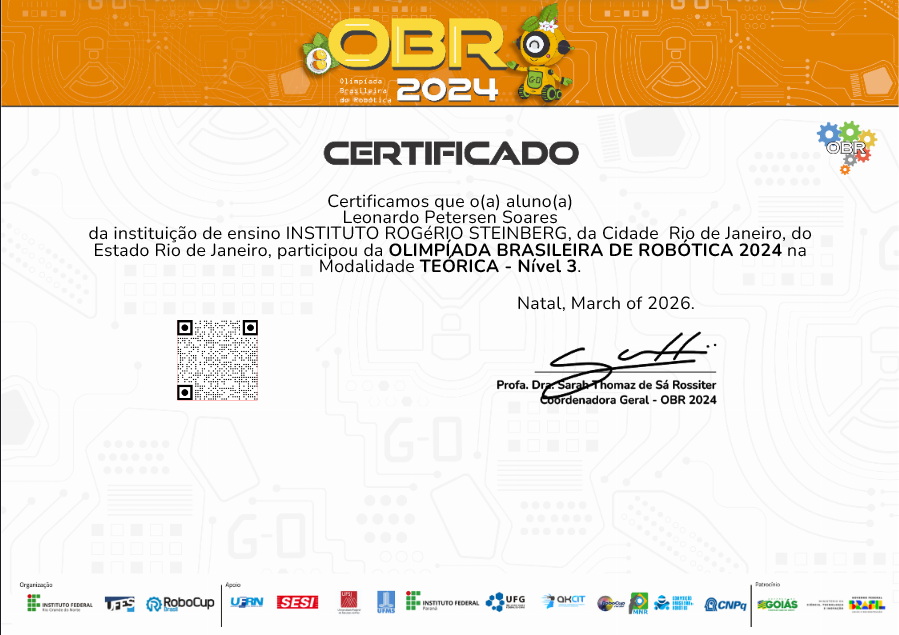

Sobre Mim
Um pouco mais sobre quem eu sou e o que gosto de fazer.
👋 Quem sou eu?
Eu sou o Leonardo, tenho 15 anos atualmente e moro no RJ. A área da tecnologia me intriga muito, desejo
aprender tudo sobre, mesmo que seja difícil, afinal, quem é curioso também é muito teimoso!
Minha
curiosidade é algo bom e ruim, bom porque me faz querer aprender coisas novas, saber mais sobre e
melhorar no geral, ruím porque me enche de coisas que quero aprender e me faz cometer erros demais (na
verdade acho isso ruim e bom ao mesmo tempo).
O que me interessa em Tecnologia?
No momento o meu foco é em Engenharia da Computação e Elétrica (sim, elétrica porque tem relação com tech e eu achei intrigante).
É vergonhoso admitir, mas o quê eu tive e ainda tenho que aprender no ensino comum aparece nos meus hobbies, portanto tenho que continuar aprendendo, mas perceber isso também fez os estudos ficarem 'mais leves', se é que isso faz sentido.
Interesse só nisso?
Não, não é só isso que me interessa, recentemente descobri que tenho muito interesse por histórias, saber o que o autor queria passar pro espectador, como ele fez isso, dentre outras coisas desse tema. Também me interesso por finanças e economia, Matemática (e minhas notas são horríveis, irônico não?) e outras coisas menores que prefiro deixar de fora por enquanto.
De onde vem sua criatividade?
Sinceramente, eu não faço a mínima ideia. Nunca li um livro na minha vida, só lembro de ler cinco páginas de um quando criança. Se eu tivesse que adivinhar foi por causa de desenhos na televisão (mas eu não acredito que seja) ou a criatividade só veio depois da puberdade quando comecei a assistir animes e ler artigos e blogs na internet, mesmo que não seja algo tão frequente.
O que eu faço offline (ou quase)

🔧 Consertar e Modificar Eletrônicos
Nossa, só de pensar em abrir algo pra consertar e ficar horas medindo coisa com multímetro só pro problema ser algo banal me deixa ansioso pra começar. Se me pedem pra modificar algo então? Vixe, fico maluco pra fazer.

🎬 Edição Audiovisual
Tenho alguns vídeos pra editar no Davinci Resolve 20 porque me interesso em edição e criação
de roteiros, "não começou por que? Teu canal tá Vazio.".
Não tô fazendo nada porque
minha GPU quebrou há dois anos atrás🤡, não comprei outra ainda porque não é prioridade da
minha lista.

🎮 Jogatina
Gosto de jogar OSU! (não acredito que jogo isso há três anos e continuo viciado), e qualquer
outro jogo se eu estuver com meus amigos.
'Ninguém é de ferro né? Tem que deixar o mlk
ter
seu tempo de jogar.'
📚 Estudar para Olimpíadas
SÓ depois de estudar o que precisar! (e jogar também né). Mas estudo para aquelas com temas relacionados à tecnologia, como: ONIA, OBI, OBICT, etc.

💻 Tempo ""Livre""
Tire os estudos escolares da minha rotina e você vai ver que ainda tô estudando algo só pela diversão mesmo, fazendo algum projeto pra guardar e nunca mais ver e também jogando (afinal, não posso perder minha classificação no jogo né kk).

📺 Consumindo conteúdo
Não podia faltar né? Obviamente no kit jovem do século XXI não podia faltar: Youtube, Instagram, etc. Não curto muito vídeos curtos, mas assisto de vez em quando. Também vejo animes, com baixa frequência, mas ainda vejo.
🛠️ O que eu sei fazer
🔧 Hardware & Reparos
Montagem e Manutenção de PCs
Sei montar desktops e fazer a manutenção dos mesmos, sei também fazer manutenção em outros eletrônicos em geral. Posso modificar eletrônicos pra adicionar ou remover funções e detalhes.
💻 Software & Sistemas
Instalação e gerênciamento de sistemas operacionais
Posso instalar windows, linux, macos (hackintosh também), e sei fazer gerênciamento do windows, seja em firewall, antivírus, GPO ou virtualização (windows em vhdx). Em Linux eu sei gerenciar firewall via ufw e recursos por Webmin.
Windows Avançado
Configuração avançada do Windows, incluindo IoT Enterprise LTSC, Hyper-V para virtualização a nível de kernel, e otimizações de performance.
Docker e Virtualização
Crio e gêrencio conteiners docker no windows e linux via compose.
🌐 Redes & Infraestrutura
Redes Privadas & VPN
Configuração de Tailscale e ZeroTier para acesso remoto seguro à rede local. Entendimento de CGNAT e túneis.
Reverse Proxy, SSL & DNS
Configuração de Nginx Proxy Manager com SSL, gerenciamento de subdomínios via FreeDNS, gerenciamento de domínios e túneis via Cloudflare e seu serviço ZeroTrust, deploy de websites estáticos com Vercel e integração deles via repositório no GitHub.
🤖 IA & Machine Learning
LLMs Locais & APIs
Execução de modelos de linguagem locais com Ollama, LMStudio e KoboldCPP. Integração com APIs como OpenRouter, Pollinations e Google Gemini. Uso de MCP Servers com Docker. Setup e configuração do OpenClaw.
Geração de Imagens & Voz
Com Stable Diffusion, chatterbox, LuxTTS, Applio (RVC), e outros.
🎬 Audiovisual
Edição de Vídeo & Áudio
Edição intermediária de vídeo e áudio no DaVinci Resolve Design básico no Figma e Canva.
🚀 Ferramentas que utilizo
 Front-end Web dev | HTML | CSS | JS
Front-end Web dev | HTML | CSS | JS
Aprendendo no Devclub a trilha Fullstack pra aprender front-end e melhorar no back-end. Me considero iniciante e uso agentes LLM pra ajudar com JS e CSS.
 Python
Python
Consigo ler de certa maneira scripts em Python, mas não escreve-los já que decidi adiar meu aprendizado dessa linguagem pra depois.
 Bash
Bash
Linguagem usada no Linux, sei o suficiente pra poder usar o sistema mas não o suficiente para criar scripts em bash.

Oracle Cloud VPS / Servidor LinuxEu consigo criar, gerenciar e manter uma VPS com Linux (Distros baseadas em Debian), configurar a firewall do servidor e do sistema. (Usado nesse site anteriormente.)
 Nginx Proxy Manager
Nginx Proxy Manager
Consigo configurar Proxy Hosts e SSL no Nginx Proxy Manager, no futuro pretendo aprender todas as funções dele. (Usado nesse site anteriormente.)
 Webmin
Webmin
Usava para gerenciar o servidor via web junto com o website.
 Figma
Figma
Sei fazer designs básicos no Figma como as estrelas flutuantes no fundo dessa página e minha logo do zero.
 Canva
Canva
Sei fazer designs básicos no Canva e editar imagens.
 DaVinci Resolve
DaVinci Resolve
Consigo fazer edição de vídeo intermediária no Davinci Resolve.
 Audacity
Audacity
Uso básico pra editar alguns áudios de maneira rápida.
 Google Antigravity
Google Antigravity
IDE que eu uso para codar, de vez em quando usando os agentes pra me ajudar com o código os fazer coisas simples e longas pra economizar tempo.
 PuTTY
PuTTY
Uso para acessar minha VPS via SSH com private key sem senha.
 Docker
Docker
Uso para criar containers virtualizados para rodar alguns dos meus serviços e para facilitar o deploy dos mesmos.
 VPNs | Tailscale | ZeroTier
VPNs | Tailscale | ZeroTier
Uso para gerir minha rede local privada e acessar meus serviços de qualquer lugar.
 Playit.gg
Playit.gg
Usava para expor serviços da minha rede local para a internet sem precisar configurar redirecionamento de portas.
 Cloudflared
Cloudflared
Usado no site
Uso pra direcionar os projetos hosteados no meu workstation em casa por um tunnel pro meu domínio gerenciado pela cloudflare com proteção.
 Hyper-V
Hyper-V
Ativado na minha máquina principal para rodar Linux e Windows ao mesmo tempo em nível 1 VT.

MCP ServersConsigo integrar um servidor MCP à um LLM Local usando Docker MCP, seja com o Claude Desktop, Gemini CLI, Ollama/LMStudio ou à uma LLM externa com uma API local aberta pra web.
 LMStudio / Ollama
LMStudio / Ollama
Uso para rodar LLMs locais na minha máquina e uso a API local para meus projetos, conectando meus modelos locais aos projetos.
 OpenRouter API
OpenRouter API
API que uso para colocar LLMs mais pesadas em meus projetos sem precisar do modelo localmente.
 Google AI Studio/h3>
Google AI Studio/h3>
Tenho Google AI Plus, então por que não usar né.
🎓 Formação & Educação
PENSI Copacabana - EF.II 9° Ano
Cursando o 9° ano do Ensino Fundamental II na unidade de Copacabana do PENSI. 13:40 - 19:10
FIAP — Certificações de TI
Atualmente cursando: "Gestão de Infraestrutura de TI" e "Design Thinking".
DevClub | Cursos de Desenvolvedor
Cursando os cursos de Desenvolvedor Full Stack & MBA em IA e Automações para Negócios na DevClub.
🏆 Conquistas & Certificados
Clique numa pasta para ver os certificados

Missão Programação com IA
DevClub · 03/2026

Participação na ONIA 2 | 1a Fase
Olímpico · 11/2025

Participação na ONIA 2 | 2a Fase
Olímpico · 12/2025

Programação Orientada a Objetos
Bradesco · 11/2025

Fundamentos de TI
Bradesco · 11/2025

Participação na OBR 2024 | 1a Fase, Regional
OBR · 2024

Participação na OBR 2024 | 2a Fase, Estadual
OBR · 2024

Medalha de Melhor Design na OBR 2024 Estadual
OBR · 2024

Participação na OBR 2024 | Teórica N3
OBR · 2024
⚙️ Minha Workstation
Estou planejando meu próximo upgrade para conseguir rodar LLMs pesados e todos os meus projetos localmente 24/7.